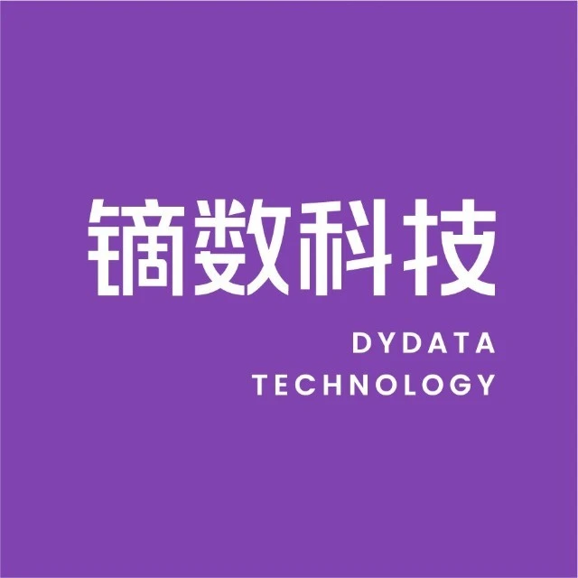
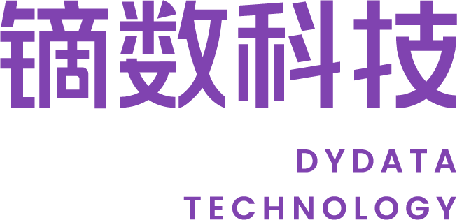
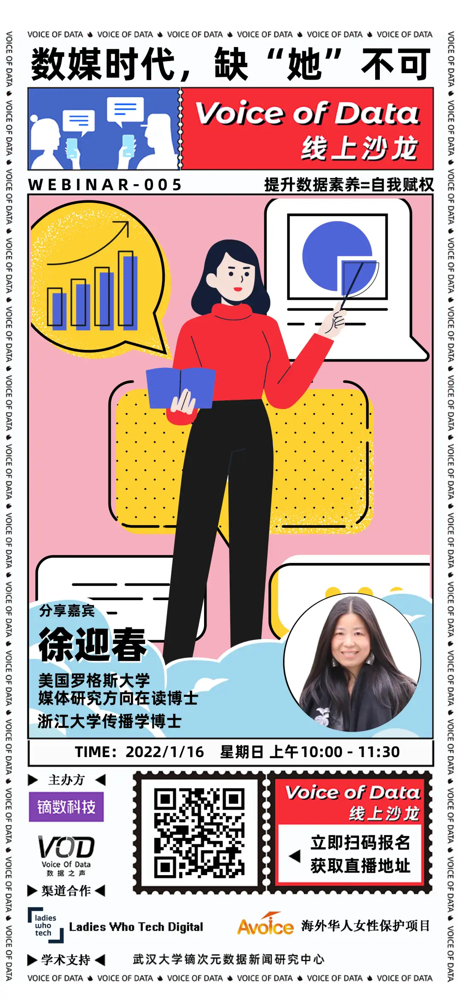
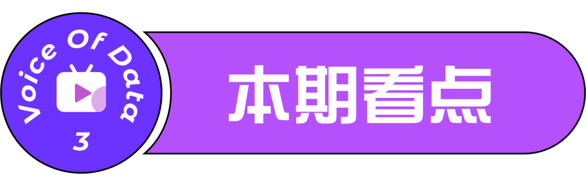
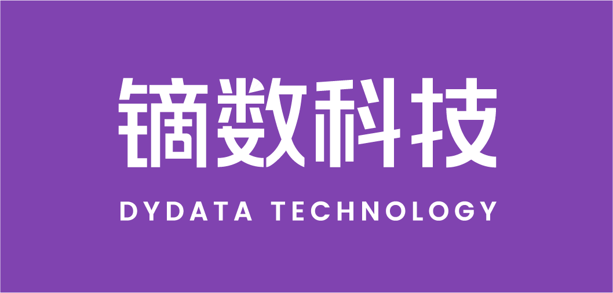
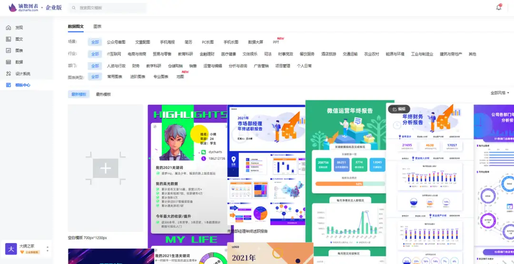
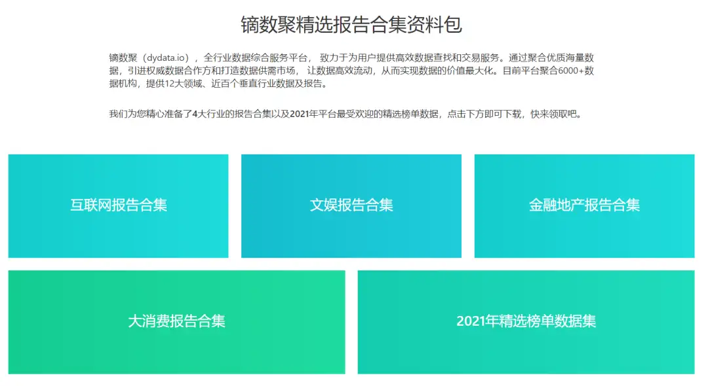
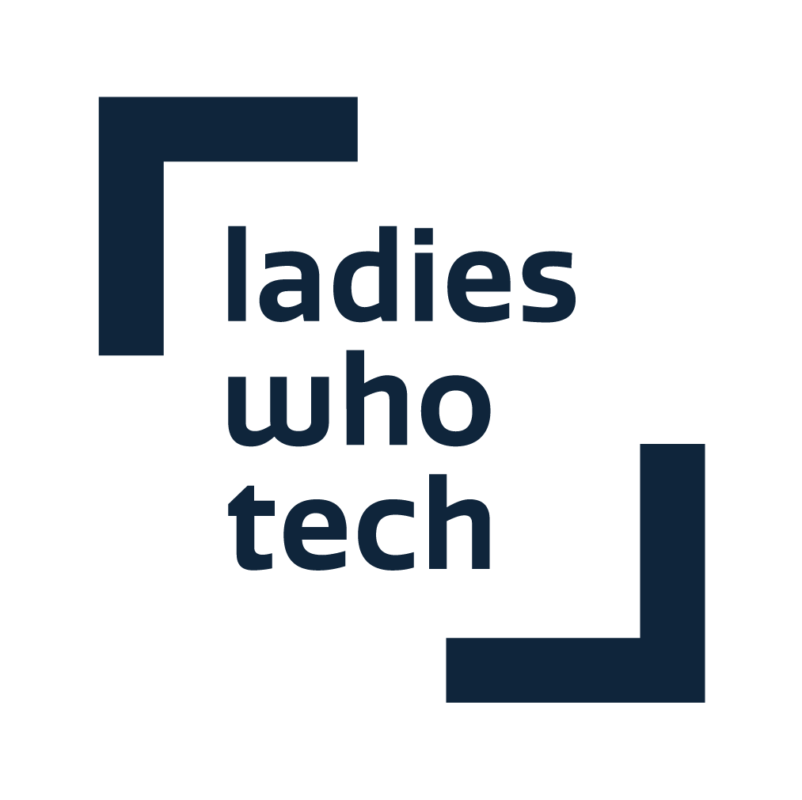
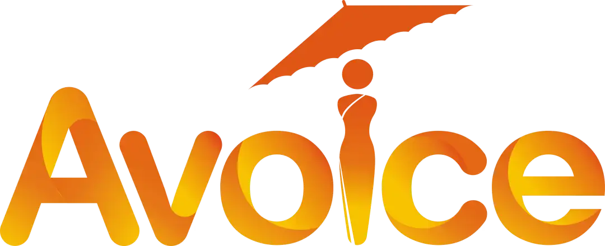

以下文章来源于镝数dydata ，作者镝数科技

镝数科技，欢迎关注！


根据中国互联网络信息中心（CNNIC）发布的报告显示，互联网普及率超70%，数字社会已然来临，数字媒体是信息传播的主流渠道。
我们在依赖数字媒体获知信息的同时，数字媒体也在深刻地影响着人们对世界的认识。从数字媒体时代的传播角度来看，女性数据素养的提升为什么会对女性的发展至关重要？女性如何提高数据素养？
本期【数据之声Voice of Data】线上沙龙，我们很荣幸邀请到徐迎春博士，围绕“女性主义和数据素养提升”来进行相关分享。
徐博士曾任浙江传媒学院副教授，获浙江大学传播学博士学位，现在美国罗格斯大学留学，攻读媒体研究的博士学位。
通过本期分享，希望更多的现代女性在数字媒体时代提高自身对数据素养的关注和学习，得到成长与发展，获取更多向前一步的原动力，缩小性别差距。
扫码报名
👇

日期： 2022年1月16日（星期日）
时间：10:00 - 11:30
地点：线上直播（扫码获取直播地址）
徐迎春
美国罗格斯大学媒体研究方向在读博士
浙江大学传播学博士
浙江大学传播学博士，职业生涯中先后担任过浙江电视台的新闻记者工作以及全球最大的环保组织——世界自然基金会（WWF）长江保护项目的传播工作，并曾于浙江传媒学院担任多年数据新闻、媒介批评、传播学等课程教学工作，副教授。
现在美国罗格斯大学留学，攻读媒体研究的博士学位。主要研究兴趣在媒体和弱势文化话语，包括环境、女性和少数族群文化方面。

📈数据素养为什么会是“赋权女性及女性自我赋权”的重要渠道？女性如何提升数据素养？
💻网络骚扰和暴力以及女性使用数字社交媒体（尤其短视频平台）的现状。
👩🦰以社会性别的视角重新审视数据过程。
👫呼吁联结/支持女性和女性主义视角的多元、包容的重要性。
👆
扫描二维码
报名参加
也可点击阅读原文进行报名

# 惊喜福利 #
福利1
人人可用的交互图表制作平台【镝数图表】30天·VIP会员权益，3分钟让你的图表焕然一新，一图胜千言，提高职场竞争力！

福利2
权威数据聚合平台【镝数聚】·4大行业的报告合集以及2021年平台最受欢迎的精选榜单数据，动动手指，即可拥有！

关注【镝数dydata】公众号
或
公众号后台回复【数据之声】
即可轻松领取！
让你在可视化创作的路途上毫无烦恼！
- E N D -
关于
VoiceofData沙龙，是【镝数科技】旗下一档栏目，带你聆听数据声音，感受数据趣味。It's not about data,it's about life.我们汇聚了国内外行业大咖与研究学者，解读有趣数据新闻作品、分享数据科学、可视化应用等话题，在这里，你可以从数据的视角关注热点话题，获得富有创意的想法，让数据为你带来更多可能性!我们一起，释放数据的价值，发现更多元的世界~
主办方
协办方
渠道合作
LadiesWhoTech Digital

海外华人女性保护项目

学术支持
武汉大学镝次元
数据新闻研究中心
往期活动
|
VOD播客 | #002 隐私保护新时代—社交媒体时代的数据隐私
|
爱无暴力
Stop Violence In Love

转载请联系本公众号
微信公众号：海外华人女性保护项目
微博：海外华人女性保护项目
抖音：海外华人女性保护项目
快手：Avoice华人女性保护
知乎：Avoice华人女性保护
B站：Avoice华人女性保护
Instagram：avoice_womenaid
领英：Avoice海外华人女性保护
点击“阅读原文”，立即报名直播啦～